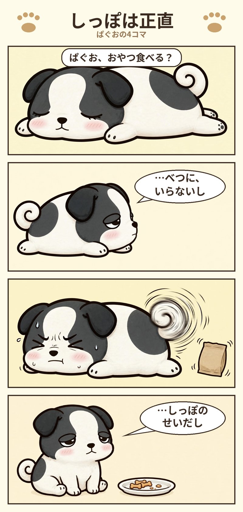

4KOMA
ぱぐおの4コマ
ぱぐおの4コマ漫画だよ。noteで毎日連載中。顔は知らんぷりでも、しっぽは正直なんだ。
第1話「しっぽは正直」

第1話のあらすじ：「ねむいから、そっとしといて」。そう言いたいのに、飼い主さんに呼ばれると、しっぽだけは嬉しくて揺れてしまう。言葉は素直になれないけれど、しっぽは正直。パグのキャラクター「ぱぐお」の連載は、ここから始まったよ。
続きは note で毎日更新中だよ。
noteで連載を読む
全話アーカイブ
パグのキャラクター「ぱぐお」の4コマ漫画、全話のタイトルとあらすじだよ。本編は note で毎日連載中。
第1話「しっぽは正直」
「ねむいから、そっとしといて」と言いたいのに、しっぽだけは嬉しくて揺れてしまう。素直になれないぱぐおの、第1話。
第2話「風呂キャン」
お風呂の誘いを全力で回避する、風呂キャンセル界隈なぱぐおの話。
第3話「おさんぽ、いきたくないし」
お散歩に誘われても、どうしても動きたくない。でも本当の気持ちは、しっぽが知っている話。
第4話「ごはん、まだ？」
ごはんの時間が待ちきれなくて、時計とにらめっこするぱぐおの話。
第5話「雨の日は、でない」
雨の日は一歩も外に出ない。固い決意と、しっぽの本音の話。
第6話「寝落ち3秒前」
眠気にあらがえない。寝落ちする3秒前までを描く話。
第7話「甘えたいけど、言えない」
甘えたい気持ちはあるのに、素直に言えない。ぱぐおらしい不器用な話。
第8話「お留守番のプロ」
お留守番はベテランの域。プロの流儀を見せる話。
第9話「換毛期は、戦い」
抜け毛の季節は戦場。パグの換毛期あるあるの話。
第10話「新しいおもちゃ」
新しいおもちゃがやってきた日の、ぱぐおの反応の話。
第11話「キャリーケースの気配」
キャリーケースの気配に、ざわつくぱぐおの話。
第12話「日向ぼっこの特等席」
日向ぼっこの特等席は、絶対にゆずらない話。
第13話「こたつから出られない」
こたつの魔力には勝てない。冬のぱぐおの話。
第14話「はつ雪、さむいし」
初雪の日。寒がりなぱぐおの反応を描く話。
第15話「マフラー、巻かれたし」
マフラーを巻かれたぱぐおの、ちょっと誇らしげな話。
第16話「あいつ、せんたく中」
お気に入りの「あいつ」が洗濯されている間、そわそわするぱぐおの話。
第17話「みかんの箱が、最高だし」
みかんの段ボール箱が、最高の居場所になる話。
第18話「窓に、肉球スタンプ」
窓ガラスに、肉球のスタンプを残すぱぐおの話。
第19話「大掃除から、かくれるし」
大掃除の気配を感じて、身を隠すぱぐおの話。
第20話「湯たんぽは、ゆずらない」
湯たんぽの温もりは独り占めしたい、冬の夜の話。
第21話「カレンダー、あと1枚だし」
カレンダーが最後の1枚になった頃の、年末の話。
第22話「くつした、かけたし」
くつしたにまつわる、小さな事件の話。
第23話「サンタさん、来たみたいだし」
サンタさんが来たみたい。クリスマスの朝の話。
第24話「年賀状、ボクの分は？」
年賀状の季節。自分の分はあるのか、気になるぱぐおの話。
第25話「あし、つめたくない？」
寒い日の、足元の冷たさが気になる話。
第26話「ツリー、だれが飾ったの？」
クリスマスツリーを眺めるぱぐおの話。
第27話「おもち、のびすぎじゃない？」
のびるおもちに驚くぱぐおの話。
第28話「テレビ、もう消しちゃうの？」
テレビを消されるのが名残惜しい、夜の話。
第29話「手袋、どこいったの？」
片方の手袋を探す、小さな事件の話。
第30話「カイロ、もう1個いる？」
カイロの温もりが、もっと欲しくなる話。
第31話「セーター、似合ってる？」
セーターを着たぱぐおの話。
第32話「イルミネーション、まぶしくない？」
イルミネーションの明るさに、目を細めるぱぐおの話。
第33話「雪だるま、だれに似てる？」
雪だるまが、誰かに似ている話。
番外編「ポップコーンが、先に終わったし」
映画のお供のポップコーンが、本編より先に終わってしまう話。
番外編「帰り道も、映画だし」
映画の帰り道も、余韻たっぷりなぱぐおの話。
番外編「NISA、はじめたし」
ぱぐおがNISAをはじめた（？）という、ちょっと意外な話。
番外編「なんでこんなとこに！？」
帰り道の続編。頭の上のポップコーンと、謎の声の話。